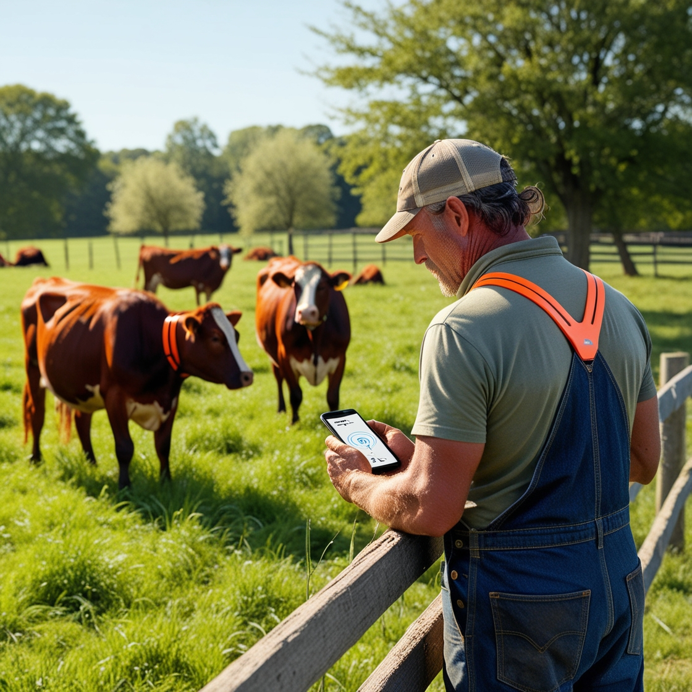

Soluções Inteligentes para Gestão de Gado e Pastoreio.
Na RastroGado, integramos tecnologia de ponta para oferecer rastreamento, monitoramento e gestão eficiente do seu rebanho. Simplifique seu dia a dia no campo com dados precisos e controle total, direto na palma da sua mão.
O RastroGado é um aplicativo inovador destinado a fazendeiros que buscam uma solução acessível e eficaz para o monitoramento de gado.
Monitoramento de BPM
Acompanhe a saúde do seu gado em tempo real.
Posicionamento GPS
Localize seu gado em tempo real e evite perdas.
Relatórios de Saúde
Receba relatórios detalhados sobre a saúde do seu rebanho.
Análise de Dados
Informações fragmentadas dificultam a tomada de decisões.

Por que nós escolher?
Oferecemos ferramentas inteligentes para monitorar a saúde, localização e produtividade do rebanho, ajudando produtores a maximizar lucros e garantir o bem-estar animal.
Concentre-se no que realmente importa enquanto nós cuidamos do rastreamento e das análises.
Identifique áreas de melhoria com relatórios completos.
Controle tudo diretamente pelo celular ou computador.
Como a RastroGado Resolve Problemas?
Estamos comprometidos em proporcionar uma experiência intuitiva e rica em recursos que auxiliem na gestão do seu rebanho.
Monitoramento da Qualidade do Pasto.
Localização e Controle do Rebanho.
Gestão da Rotação de Pastagens.
Prevenção de Doenças e Bem-Estar Animal.
Projetos e metas
Na RastroGado, estamos comprometidos em transformar a gestão pecuária com soluções inovadoras que impulsionam resultados.
Lançar um módulo que combine dados meteorológicos, históricos da propriedade e sensoriamento remoto para prever variações climáticas com impacto direto no pasto.